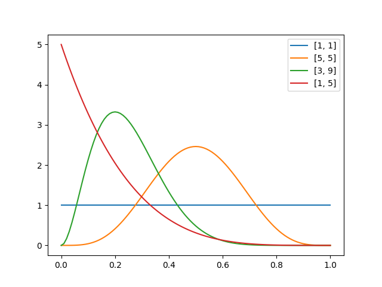

確率分布（probability distribution）
概要
ベルヌーイ分布（Bernoulli distribution）
確率変数()が確率で1の値を取るときの確率分布。 つまり二項分布ののケースに相当する。
第1種ベータ分布（beta distribution）
ベルヌーイ分布の共役事前分布である。

import numpy as np
import scipy.stats
import matplotlib.pyplot as plt
params = [[1,1],[5,5],[3,9],[1,5]]
x = np.linspace(0,1,101)
for p in params:
rv = scipy.stats.beta(p[0],p[1])
y = rv.pdf(x)
plt.plot(x,y,label=p)
plt.legend()
plt.show()